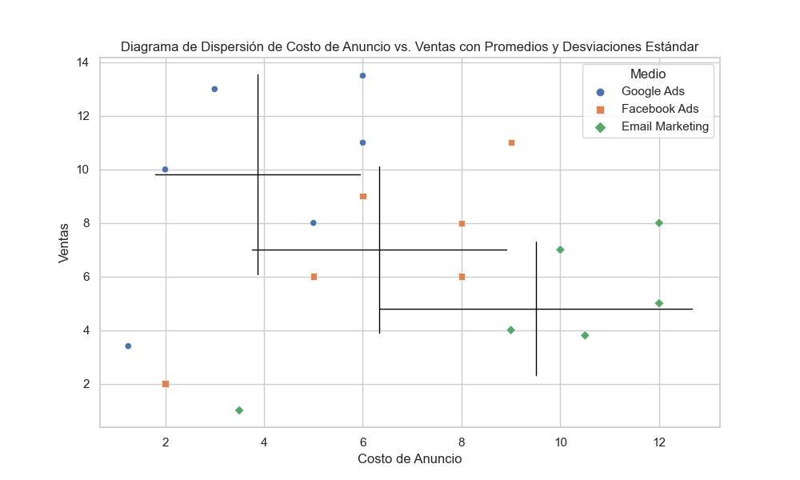

Efectos Fijos#
I’ve learned a lot. And one of the things I’ve learned is life is really unpredictable. And people can make forecasts, and they can make predictions. But those predictions and forecasts may not come true if there’s an unforseeable factor involved – Taylor Swift en el iHeartRadio Music Awards en el dia de \(\pi\) de 2019.
La regresion lineal es un modelo muy importante porque permite establecer controles en nuestros datos. El problema es que depende de un supuesto clave: inconfundibilidad condicional (las variables del lado izquierdo son los contrafactuales, la \(T\) es el tratamiento y la \(X\) son las covariables que usamos como control):
En otras palabras, requiere que todas las variables de confusion sean conocidas y medidas de tal manera que podamos incluirlas en el modelo y hacer que el grupo de tratamiento se comporte como si hubiera sido fruto de una asignacion aleatoria (para cada observacion, el resultado observado se puede expresar como \(Y = T\cdot Y^1 + (1-T)\cdot Y^0\); esto implica que la \(Y\) y la \(T\) son dependientes porque el valor promedio de \(T\times Y^1\) no equivale al promedio de \((1-T)\cdot Y^0\)). Pero, a pesar de que no siempre tenemos el lujo de que nuestras variables sean observables, siempre podemos agruparlos con caracteristicas en comun.
Ese es el problema que resuelven los modelos de datos en panel.
Como se ven los datos en panel#
Imagina que estamos estudiando el efecto que hay entre el gasto en publicidad y los ingresos que nos genera.
Para ser mas claros, estamos haciendo una campana para incrementar las ventas de una e-commerce por tres canales de venta. La primera es por anuncios de Google, el segundo con anuncios en Meta (que incluye Facebook e Instagram) y el tercero es por mail marketing.
Comencemos cargando nuestra base de datos en panel.
import pandas as pd
import statsmodels.formula.api as sm
df = pd.read_csv("../../data/sales-panel.csv")
df.head()
| Medio | Año | Ad cost | Sales | |
|---|---|---|---|---|
| 0 | Google Ads | 2020 | 3.25 | 5.5 |
| 1 | Google Ads | 2021 | 1.94 | 7.2 |
| 2 | Google Ads | 2022 | 1.35 | 6.7 |
| 3 | Google Ads | 2023 | 5.25 | 11.4 |
| 4 | Google Ads | 2024 | 1.12 | 4.8 |
Esto es el encabezado de los datos que nos genera el codigo de arriba.
Medio |
Ano |
Costo de publicidad |
Ventas |
|
|---|---|---|---|---|
0 |
Google Ads |
2020 |
1.25 |
3.4 |
1 |
Google Ads |
2021 |
2.00 |
10.0 |
2 |
Google Ads |
2022 |
6.00 |
13.5 |
3 |
Google Ads |
2023 |
5.00 |
8.0 |
4 |
Google Ads |
2024 |
6.00 |
11.0 |
Algunas observaciones sobre los datos:
Estamos agrupando los datos por el medio en el que se hace la publicidad (Anuncios de Google, Anuncios de Facebook y una campana de email marketing). Eso quiere decir que la base de datos va a repetir cada uno de esos medios en la primera columna (esta forma de presentar los datos es menos visual que si extendieramos cada uno de los medios en una columna cada uno, o wide format, pero hace mas facil aplicar los modelos que veremos en adelante).
El supuesto clave en estos datos es que los clientes que obtenemos a partir de medios diferentes son distintos entre si (este supuesto tiene sentido, simplemente porque se interactua diferente en diferentes medios. El medio entonces agrupa muchas caracteristicas no observables de los grupos. Por ejemplo, podriamos imaginar que los clientes de mail marketing ya confian mas en nuestro contenido, mientras que los que vienen de publicidad de Meta podrian desconfiar aun en nosotros. La confianza no se puede medir, pero queda implicita en el medio).
Es un ejemplo simple, pero en realidad un analisis de panel como este podria ser muy util para analizar campanas distintas que corren en paralelo.
Hagamos un diagrama de dispersion para analizar los datos.
Lo que deseamos conocer es el efecto que hay entre el costo de la publicidad y las ventas de esa campana particular.
import pandas as pd
import matplotlib.pyplot as plt
import numpy as np
import seaborn as sns
df = pd.read_csv("../../data/sales-panel.csv")
markers = {
'Google Ads': 'o',
'Facebook Ads': 's',
'Email Marketing': 'D'
}
sns.set(style="whitegrid")
plt.figure(figsize=(10, 6))
for medio in df['Medio'].unique():
subset = df[df['Medio'] == medio]
plt.scatter(
subset['Ad cost'],
subset['Sales'],
s=100,
label=medio,
color='black',
marker=markers[medio]
)
X = df['Ad cost'].values
Y = df['Sales'].values
model = np.polyfit(X, Y, 1)
predicted = np.polyval(model, X)
plt.plot(X, predicted, color='gray', linewidth=2)
plt.title('Diagrama de dispersion del costo de publicidad vs ventas')
plt.xlabel('Costos de publicidad')
plt.ylabel('Ventas')
plt.legend()
plt.grid(True)
plt.show()

Le puse formas distintas para que notes a simple vista: una regresion simple no es lo que deseamos hacer.
Si hicieramos una regresion lineal simple tendriamos que nuestro gasto en publicidad no esta aumentando las ventas. Al contrario, las esta haciendo caer! Pero al separarlos por medio nos podemos dar cuenta de que no es asi: cada una de las campanas de manera individual tiene un efecto positivo claro en las ventas.
Esto se ve mas claro si trazamos una linea de regresion para cada uno de los medios en nuestro diagrama de dispersion.
unique_media = df['Medio'].unique()
sns.lmplot(
x='Ad cost',
y='Sales',
data=df,
hue='Medio',
markers=['o', 's', 'D', '^'][:len(unique_media)],
palette = ['black'] * len(df['Medio'].unique()),
height=6, aspect=1.6, ci=None)
plt.title('Diagrama de dispersion del costo de publicidad vs ventas con lineas de regresion separadas por medio')
plt.xlabel('Costos de publicidad')
plt.ylabel('Ventas')
plt.show()

Los efectos fijos son solo una aglomeracion de variables de control en una sola#
La clave de los efectos fijos es que:
Podemos incluir el efecto del tiempo en nuestro modelo, pero el tiempo en si mismo no es una variable.
Lo que importa es que estamos capturando todas las caracteristicas intrinsecas de nuestro medio y estamos asumiendo que son “fijas”.
El modelo de efectos fijos se define en terminos generales como
donde \(Y_{it}\) es el resultado que tiene el individuo \(i\) en el tiempo \(t\), que puede medirse en meses, anos, trimestres o lo que sea que tenga sentido. Nuevamente, \(X_{it}\) es el vector de variables para el individuo \(i\) en el tiempo \(t\) (es muy comun aprender sobre datos en panel con zonas geograficas, por ejemplo, con registros de diferentes paises en el tiempo).
Nota que ahora incluimos una variable \(U_i\) que no tiene subindice de tiempo \(t\).
Esta representa el conjunto de inobservables del individuo \(i\) (la \(U\) es porque en ingles se dice unobservables). Este elemento no tiene subindice \(t\) porque asumimos que estos inobservables no tienen variacion en el tiempo. Por ejemplo, en una campana de anuncios de google podemos asumir que el algoritmo que subasta un termino de busqueda es el mismo para todas las observaciones que hacemos.
Variacion dentro del individuo (within)#
En teoria, los efectos fijos funcionan igual que si usaramos una variable dummy para cada uno de los individuos.
El problema es que no es raro que nuestro panel se componga de mas de 3 variables como en el ejemplo. Imaginemos que estamos tratando de hacer un panel para una campana gigantesca ultrasegmentada de contenido con facebook ads. Una campana asi funcionaria haciendo un anuncio para cada pieza de contenido que hacemos, pautando (haciendo publicidad) y dejando que el algoritmo de meta encuentre a los consumidores ideales de ese contenido. Lo que obtenemos es una campana para cada pieza de contenido que corre en paralelo. Esto puede hacer que el tamano de nuestra base de datos aumente muy rapido (si de verdad usaramos dummies para cada uno de los individuos, serian \(n-1\) variables adicionales las que tendriamos que incluir en nuestra regresion. Si estas usando R como software para hacer tu trabajo y si incluyes la variable de clasificacion como un objeto de tipo factor, el software lo transforma en dummies de forma automatica y hace la regresion con la funcion lm()).
Por eso haremos un pequeno truco que nos permitira obtener el mismo resultado que si usaramos variables dummy, pero con un conjunto mas manejable de datos.
El primer paso es obtener el valor de la media condicional de publicidad y ventas en cada uno de los medios. Nuestro objetivo sera identificar el punto en el que se cruzan los puntos medios de cada grupo para posteriormente juntarlos en un mismo medio.
Asi se ven de manera visual.
media_stats = df.groupby('Medio').agg({'Ad cost': ['mean', 'std'], 'Sales': ['mean', 'std']}).reset_index()
plt.figure(figsize=(10, 6))
sns.scatterplot(x='Ad cost', y='Sales', data=df, hue='Medio', style='Medio', markers=['o', 's', 'D'][:len(unique_media)])
for _, row in media_stats.iterrows():
medio = row['Medio']
ad_cost_mean = row[('Ad cost', 'mean')]
ad_cost_std = row[('Ad cost', 'std')]
sales_mean = row[('Sales', 'mean')]
sales_std = row[('Sales', 'std')]
plt.plot([ad_cost_mean - ad_cost_std, ad_cost_mean + ad_cost_std], [sales_mean, sales_mean],
color='black', linestyle='-', linewidth=1)
plt.plot([ad_cost_mean, ad_cost_mean], [sales_mean - sales_std, sales_mean + sales_std],
color='black', linestyle='-', linewidth=1)
plt.title('Diagrama de Dispersion de Costo de Anuncio vs. Ventas con Promedios y Desviaciones Estandar')
plt.xlabel('Costo de Anuncio')
plt.ylabel('Ventas')
plt.legend(title='Medio')
plt.grid(True)
plt.show()

El siguiente paso es restar estas medias de nuestros individuos.
Visualmente lo que esto logra es como si “empalmaramos” las cruces que se formaron en el grafico anterior.
Ahora solo tenemos que hacer una regresion de \(\ddot{Y}_{it}\) contra \(\ddot{X}_{it}\), o bien
Estas son las nuevas variables de nuestra regresion de efectos fijos.
Nota que el termino de elementos inobservables desaparece. Esto es porque \(U_{i}=\bar{U}_{i}\), por su propia definicion. Es una operacion que elimina todos los terminos constantes en el tiempo.
En concreto, la regresion se hace sobre este conjunto de datos.
df['Within Ad cost'] = df.groupby('Medio')['Ad cost'].transform(lambda x: x - x.mean())
df['Sales Within'] = df.groupby('Medio')['Sales'].transform(lambda x: x - x.mean())
df.head()
| Medio | Año | Ad cost | Sales | Within Ad cost | Sales Within | |
|---|---|---|---|---|---|---|
| 0 | Google Ads | 2020 | 3.25 | 5.5 | 0.748333 | -1.383333 |
| 1 | Google Ads | 2021 | 1.94 | 7.2 | -0.561667 | 0.316667 |
| 2 | Google Ads | 2022 | 1.35 | 6.7 | -1.151667 | -0.183333 |
| 3 | Google Ads | 2023 | 5.25 | 11.4 | 2.748333 | 4.516667 |
| 4 | Google Ads | 2024 | 1.12 | 4.8 | -1.381667 | -2.083333 |
Ano |
Gasto publicitario |
Ventas |
Gasto interno |
Ventas internas |
|---|---|---|---|---|
2020 |
1.25 |
3.4 |
-2.625 |
-6.42 |
2021 |
2.00 |
10.0 |
-1.875 |
0.18 |
2022 |
6.00 |
13.5 |
2.125 |
3.68 |
2023 |
5.00 |
8.0 |
1.125 |
-1.82 |
2024 |
6.00 |
11.0 |
2.125 |
1.18 |
Notas: El “Gasto interno” y “Ventas internas” corresponden a las variables centradas dentro del medio (within). Todos los valores corresponden a la plataforma Google Ads.
Y visualmente, podemos observar que colocamos juntos los centros que calculamos con anterioridad. Nuestro modelo es una regresion lineal con los datos modificados de esta manera:
media_within_stats = df.groupby('Medio').agg({'Within Ad cost': ['mean', 'std'], 'Sales Within': ['mean', 'std']}).reset_index()
plt.figure(figsize=(10, 6))
sns.scatterplot(x='Within Ad cost', y='Sales Within', data=df, hue='Medio', style='Medio', markers=['o', 's', 'D'][:len(df['Medio'].unique())])
sns.regplot(x='Within Ad cost', y='Sales Within', data=df, scatter=False, color='gray')
for _, row in media_within_stats.iterrows():
medio = row['Medio']
within_ad_cost_mean = row[('Within Ad cost', 'mean')]
within_ad_cost_std = row[('Within Ad cost', 'std')]
sales_within_mean = row[('Sales Within', 'mean')]
sales_within_std = row[('Sales Within', 'std')]
plt.plot([within_ad_cost_mean - within_ad_cost_std, within_ad_cost_mean + within_ad_cost_std], [sales_within_mean, sales_within_mean],
color='black', linestyle='-', linewidth=1)
plt.plot([within_ad_cost_mean, within_ad_cost_mean], [sales_within_mean - sales_within_std, sales_within_mean + sales_within_std],
color='black', linestyle='-', linewidth=1)
plt.title('Diagrama de Dispersion de Within Ad Cost vs. Sales Within con Cruces y Unica Linea de Regresion')
plt.xlabel('Within Ad Cost')
plt.ylabel('Sales Within')
plt.legend(title='Medio')
plt.grid(True)
plt.show()

Nota como ahora las medias estan en cero en los dos ejes.
Ahora todos los datos estan en un punto comparable. A esto se le llama “absorber” los efectos fijos.
Naturalmente, ahora podemos aplicar una regresion lineal simple a nuestros datos.
import statsmodels.api as sm
import statsmodels.formula.api as smf
formula = 'Q("Sales Within") ~ Q("Within Ad cost")'
model = smf.ols(formula, data=df).fit()
model.summary()
/usr/local/lib/python3.9/site-packages/scipy/stats/_stats_py.py:1477: UserWarning: kurtosistest only valid for n>=20 ... continuing anyway, n=18
warnings.warn("kurtosistest only valid for n>=20 ... continuing "
| Dep. Variable: | Q("Sales Within") | R-squared: | 0.325 |
|---|---|---|---|
| Model: | OLS | Adj. R-squared: | 0.283 |
| Method: | Least Squares | F-statistic: | 7.709 |
| Date: | Mon, 02 Feb 2026 | Prob (F-statistic): | 0.0135 |
| Time: | 13:32:31 | Log-Likelihood: | -35.170 |
| No. Observations: | 18 | AIC: | 74.34 |
| Df Residuals: | 16 | BIC: | 76.12 |
| Df Model: | 1 | ||
| Covariance Type: | nonrobust |
| coef | std err | t | P>|t| | [0.025 | 0.975] | |
|---|---|---|---|---|---|---|
| Intercept | 2.776e-16 | 0.427 | 6.5e-16 | 1.000 | -0.905 | 0.905 |
| Q("Within Ad cost") | 0.9509 | 0.342 | 2.777 | 0.013 | 0.225 | 1.677 |
| Omnibus: | 1.382 | Durbin-Watson: | 2.487 |
|---|---|---|---|
| Prob(Omnibus): | 0.501 | Jarque-Bera (JB): | 0.429 |
| Skew: | -0.361 | Prob(JB): | 0.807 |
| Kurtosis: | 3.229 | Cond. No. | 1.25 |
Notes:
[1] Standard Errors assume that the covariance matrix of the errors is correctly specified.
Y listo. En la siguiente tabla mostramos los resultados de la regresion.
Coeficientes |
Error estandar |
IC 95% |
|
|---|---|---|---|
Costo de publicidad |
0.828 |
0.214 |
[0.374, 1.282] |
Intercepto |
0.000 |
0.517 |
[-1.095, 1.095] |
Estadistico |
Valor |
|---|---|
\(R^2\) |
0.483 |
\(R^2\) ajustada |
0.451 |
N (observaciones) |
18 |
La regresion sobre nuestros datos centrados es una regresion lineal simple. Podemos observar que la relacion entre la publicidad y las ventas es positiva al ver el coeficiente. Tambien es una relacion significativa, de acuerdo al estadistico t y al p-value.
Este es un modelo sencillo con solo dos variables. Por eso podemos aplicar el truco de centrar las variables en grupos directamente y usar una regresion sencilla de minimos cuadrados. Sin embargo, en modelos mas complejos, tendras que usar paqueteria especializada para el manejo de datos en panel.
Este es el codigo para hacer la regresion de efectos fijos con la funcion PanelOLS, del modulo linearmodels.
from linearmodels.panel import PanelOLS
df_panel = df.set_index(['Medio', 'Año'])
panel_model = PanelOLS.from_formula('Sales ~ Q("Ad cost") + EntityEffects', data=df_panel)
panel_results = panel_model.fit()
panel_results.summary
| Dep. Variable: | Sales | R-squared: | 0.3252 |
|---|---|---|---|
| Estimator: | PanelOLS | R-squared (Between): | 0.5732 |
| No. Observations: | 18 | R-squared (Within): | 0.3252 |
| Date: | Mon, Feb 02 2026 | R-squared (Overall): | 0.5562 |
| Time: | 13:32:31 | Log-likelihood | -35.170 |
| Cov. Estimator: | Unadjusted | ||
| F-statistic: | 6.7455 | ||
| Entities: | 3 | P-value | 0.0211 |
| Avg Obs: | 6.0000 | Distribution: | F(1,14) |
| Min Obs: | 6.0000 | ||
| Max Obs: | 6.0000 | F-statistic (robust): | 6.7455 |
| P-value | 0.0211 | ||
| Time periods: | 6 | Distribution: | F(1,14) |
| Avg Obs: | 3.0000 | ||
| Min Obs: | 3.0000 | ||
| Max Obs: | 3.0000 | ||
| Parameter | Std. Err. | T-stat | P-value | Lower CI | Upper CI | |
|---|---|---|---|---|---|---|
| Q('Ad cost') | 0.9509 | 0.3661 | 2.5972 | 0.0211 | 0.1656 | 1.7362 |
F-test for Poolability: 12.316
P-value: 0.0008
Distribution: F(2,14)
Included effects: Entity
La siguiente tabla condensa la informacion que nos genera el reporte de nuestra regresion por panel.
Coeficiente |
Error estandar |
IC 95% |
|
|---|---|---|---|
Costo publicitario (\(x_{it}\)) |
0.828*** |
0.229 |
[0.337, 1.319] |
Estadistico |
Valor |
|---|---|
\(R^2\) (dentro) |
0.483 |
\(R^2\) (entre) |
0.667 |
\(R^2\) (global) |
0.643 |
N (observaciones) |
18 |
Numero de entidades |
3 |
Numero de periodos |
6 |
Efectos incluidos |
Entidad (efectos fijos) |
Estadistico F (modelo) |
13.09 (p = 0.0028) |
Prueba de agrupabilidad |
F(2,14) = 13.45, p = 0.0006 |
Notas: Estimaciones obtenidas mediante minimos cuadrados para datos de panel con efectos fijos. Niveles de significancia: * \(p<0.1\), ** \(p<0.05\), *** \(p<0.01\)
Que significa todo esto? Aqui algunos puntos a los que poner atencion:
El modelo muestra un valor de \(R^2\) within (dentro), de 0.483. Lo podemos interpretar como que un 48% de la variacion de las ventas se explica por el gasto en publicidad.
La prueba de agrupabilidad rechaza la hipotesis nula de que se pueda agrupar a todos los medios en un intercepto comun. Con esto validamos el uso de un modelo de efectos fijos por entidad, a diferencia de un modelo agrupado (que seria la regresion simple de todos los datos).
El modelo estima un resultado positivo y significativo. Un aumento en una unidad del gasto en publicidad se asocia con un aumento de 0.828 unidades en ventas. Este resultado ya controla diferencias constantes entre medios.
Nada mal, cierto?
El efecto fijo de dos vias#
Digamos que queremos hacer lo mismo no solo para los individuos, sino tambien para el tiempo.
El resultado seria un modelo como este:
Lo que este modelo nos da es una estimacion que permite comparar la variacion entre individuos al mismo tiempo que entre anos.
Por ejemplo, nota que en los datos anteriores, las ventas del ano 2020 son relativamente mas bajas que las demas. Es un recordatorio de la epoca de pandemia, en la que cerraron todos los negocios y las ventas de muchas cosas bajaron, a menos de que vendas cubrebocas. En el caso de las ventas por Facebook, el nivel de ventas que muestran los datos es muy bajo para lo que estamos acostumbrados a vender por ese medio, pero no es un nivel de ventas tan fuera de lo normal para el marketing por e-mail.
Usa este codigo para hacer una regresion de panel por dos vias.
from linearmodels.panel import PanelOLS
model = PanelOLS.from_formula('Sales ~ Q("Ad cost") + EntityEffects + TimeEffects', data=df_panel)
results = model.fit()
print(results.summary)
PanelOLS Estimation Summary
================================================================================
Dep. Variable: Sales R-squared: 0.5334
Estimator: PanelOLS R-squared (Between): 0.6610
No. Observations: 18 R-squared (Within): 0.3090
Date: Mon, Feb 02 2026 R-squared (Overall): 0.6369
Time: 13:32:31 Log-likelihood -29.418
Cov. Estimator: Unadjusted
F-statistic: 10.287
Entities: 3 P-value 0.0107
Avg Obs: 6.0000 Distribution: F(1,9)
Min Obs: 6.0000
Max Obs: 6.0000 F-statistic (robust): 10.287
P-value 0.0107
Time periods: 6 Distribution: F(1,9)
Avg Obs: 3.0000
Min Obs: 3.0000
Max Obs: 3.0000
Parameter Estimates
================================================================================
Parameter Std. Err. T-stat P-value Lower CI Upper CI
--------------------------------------------------------------------------------
Q('Ad cost') 1.1629 0.3626 3.2073 0.0107 0.3427 1.9831
================================================================================
F-test for Poolability: 5.4363
P-value: 0.0111
Distribution: F(7,9)
Included effects: Entity, Time
Veamos un resumen de los resultados.
Coeficiente |
Error estandar |
IC 95% |
|
|---|---|---|---|
Costo publicitario (\(x_{it}\)) |
-0.089 |
0.322 |
[-0.817, 0.639] |
Estadistico |
Valor |
|---|---|
\(R^2\) (dentro) |
-0.109 |
\(R^2\) (entre) |
-0.142 |
\(R^2\) (global) |
-0.138 |
N (observaciones) |
18 |
Numero de entidades |
3 |
Numero de periodos |
6 |
Efectos incluidos |
Entidad y tiempo (efectos fijos) |
Estadistico F (modelo) |
0.08 (p = 0.789) |
Prueba de agrupabilidad |
F(7,9) = 14.19, p = 0.0003 |
Notas: Estimaciones obtenidas mediante minimos cuadrados para datos de panel con efectos fijos por entidad y por periodo. Niveles de significancia: * \(p<0.1\), ** \(p<0.05\), *** \(p<0.01\)
Nota que Python permite hacer este tipo de modelos de una manera muy sencilla. Solo es necesario incluir en la regresion los EntityEffects al mismo tiempo que los TimeEffects.
En esta tabla los resultados no parecen ser tan alentadores. El gasto en publicidad no tiene un efecto significativo con las ventas cuando controlamos por medio y por el tiempo a la vez.
Los efectos fijos de dos vias son un tema muy interesante, pues capturan las caracteristicas completas del ano, a la vez que segmentan los efectos de los grupos en los que estan clasificados los datos. Por eso este tipo de modelos son la base del modelo de diferencias en diferencias, que permiten diferenciar el efecto en el tiempo que tienen los grupos de “tratamiento” contra los de “control”.
Lo que en la practica quiere decir es que los modelos de diferencias en diferencias son modelos de efectos fijos de dos vias, pero no todos los efectos fijos de dos vias pueden generar un diseno de diferencias en diferencias.
Cual es la diferencia? La forma en la que seleccionamos los grupos para que sean de tratamiento y de control.
En un modelo de diferencias en diferencias, lo que queremos es asemejar el diseno del estudio a un experimento natural.
Eso lo veremos en el siguiente capitulo.
Resumen del capitulo#
En este capitulo nos enfrentamos a uno de los mayores enemigos de la inferencia causal: las variables importantes que no podemos ver ni medir.
Lo que hicimos fue aprender a usar una nueva estructura de datos, los datos en panel, que nos permiten seguir a los mismos individuos (empresas, paises, o en nuestro caso, medios de publicidad) a lo largo del tiempo. Vimos como una regresion simple puede mentirnos descaradamente, mostrandonos una relacion negativa donde en realidad habia una positiva. La solucion fue aplicar la magia de los efectos fijos, un metodo que controla por todas esas caracteristicas “inobservables” y constantes de cada individuo, como la “calidad” o la “confianza” inherente a cada medio de publicidad. Lo hicimos de dos formas: a mano, con la transformacion within, y luego con las herramientas profesionales de Python. Finalmente, subimos el nivel con los efectos fijos de dos vias para controlar no solo por las diferencias entre individuos, sino tambien por los shocks que afectan a todos por igual en un ano determinado.
Esto es importante porque la mayoria de los problemas del mundo real estan plagados de heterogeneidad inobservable. La “cultura” de una empresa, la “habilidad” de un vendedor, o la “calidad” de una escuela son factores decisivos que casi nunca tenemos en una columna de nuestros datos. Ignorarlos lleva a conclusiones erroneas. El modelo de efectos fijos es tu primera gran herramienta para aislar un efecto causal en datos que no vienen de un experimento, permitiendote hacer comparaciones mucho mas justas.
Como te ayuda esto? Ahora tienes un metodo para analizar datos de individuos a lo largo del tiempo. Cuando sospeches que hay diferencias fundamentales y persistentes entre los grupos que comparas (ej. distintas sucursales de una tienda, distintos paises, distintos productos), tu primer instinto sera usar un modelo de efectos fijos. Te permite responder a la pregunta: “Dentro de cada sucursal, que efecto tuvo cambiar X en el resultado Y, una vez que eliminamos las diferencias preexistentes entre la sucursal buena y la mala?”. Es una tecnica increiblemente poderosa y es la base para entender el modelo de Diferencias en Diferencias que veremos a continuacion.
Controlando el caos: ejercicios de panel y efectos fijos#
Es hora de aplicar esta poderosa tecnica. Estos ejercicios te ayudaran a solidificar la intuicion detras de los efectos fijos y a practicar su implementacion.
La trampa de la regresion simple (Conceptual): El capitulo mostro como una regresion simple (o “agrupada”) daba un resultado enganoso. Describe otro escenario de negocios donde podria pasar lo mismo. Por ejemplo, si analizaras la relacion entre las horas trabajadas por los vendedores y las ventas totales, que “efecto fijo” a nivel de vendedor podria confundir los resultados si lo ignoras?
La magia de la transformacion within (Conceptual): El truco de restar la media de cada individuo (“de-meaning”) elimina la variable inobservable \(U_i\). Por que funciona esto? Que caracteristica fundamental debe tener esa variable inobservable para que el truco de la resta la haga desaparecer?
Calculando el “Within” a mano (Codigo): Usando el DataFrame
sales-panel.csv, calcula manualmente las variables “within” para el medioFacebook Ads. Es decir, calcula la media deAd costySalessolo para Facebook Ads, y luego resta esas medias de los valores originales para obtenerWithin Ad costySales Withinpara ese medio.Requisitos para un modelo de panel (Conceptual): Un colega te entrega un archivo de Excel y te pregunta si puede usar un modelo de efectos fijos. Que dos caracteristicas clave debe tener esa tabla de datos para que tu respuesta sea “si”?
Efectos fijos por entidad (Codigo): Carga el dataset
sales-panel.csv. Usando la librerialinearmodels, corre un modelo de efectos fijos por entidad (EntityEffects) para predecirSalesa partir deAd cost. Muestra la tabla de resultados. Confirma que el coeficiente que obtienes paraAd costes el mismo (0.828) que el que se obtuvo con la regresion sobre los datos transformados manualmente en el capitulo.Efectos fijos por tiempo (Codigo y Conceptual): Ahora, usando
linearmodels, corre un modelo de efectos fijos solamente por tiempo (TimeEffects), sin efectos de entidad. Que coeficiente obtienes paraAd cost? Es significativo? Que te dice este resultado sobre la importancia de controlar por las caracteristicas de cada medio en lugar de controlar solo por el ano?Interpretando el R-cuadrado “Within” (Conceptual): El reporte de
PanelOLScon efectos de entidad te da un \(R^2\) within de 0.483. Explica en una frase que significa este numero. A que porcentaje de la varianza se refiere?El poder de los dos efectos (Codigo y Conceptual): Corre el modelo de efectos fijos de dos vias (
EntityEffects + TimeEffects) como se muestra en el capitulo. El resultado paraAd costahora no es significativo (p-value = 0.789). Propon una historia de negocio que explique por que podria pasar esto. Que pudo haber ocurrido en ciertos anos que, al controlarlo, “absorbio” el efecto que antes veiamos en la publicidad?La prueba de Poolability (Conceptual): En el resultado del modelo con solo efectos de entidad, la prueba de “Poolability” tiene un p-value muy bajo (0.0006). La hipotesis nula de esta prueba es que los efectos fijos de todos los medios son iguales entre si. Dado el p-value, rechazas o no rechazas la hipotesis nula? Que te dice esto sobre si fue buena idea usar efectos fijos en lugar de una regresion simple?
Reto - Estructurando datos de panel (Conceptual y Codigo): Imagina que tienes un archivo CSV con esta estructura (formato “ancho” o wide):
Tienda
Ventas_2022
GastoPubli_2022
Ventas_2023
GastoPubli_2023
A
100
10
120
12
B
200
15
210
16
Los modelos de panel necesitan un formato “largo” (long). Describe como se veria esta tabla en formato largo. (Pista: investiga la funcion
pd.meltde pandas).